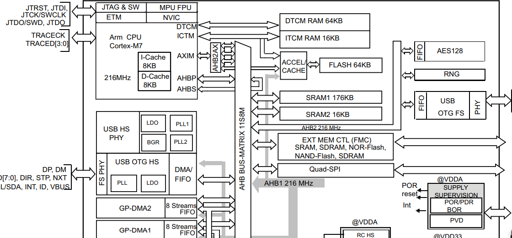
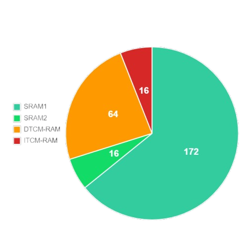

Matériel et Calculatrice NumWorks
Le fonctionnement de la calculatrice NumWorks repose principalement sur un microcontrôleur STM32F730V8T6, équipé d'un cœur Arm Cortex-M7 pouvant fonctionner jusqu'à 216 MHz. Ce composant intègre notamment 272 Ko de SRAM et 64 Ko de mémoire Flash interne.
La calculatrice dispose également d'une mémoire Flash externe de 8 Mo, accessible au processeur par l'intermédiaire d'un contrôleur Quad-SPI. L'écran possède quant à lui son propre contrôleur, le ST7789V, auquel le microcontrôleur transmet les données d'affichage.

1. Puissance de calcul et organisation de la mémoire vive
Le STM32F730 dispose d'un cœur Arm Cortex-M7 cadencé jusqu'à 216 MHz et d'une unité matérielle de calcul en virgule flottante (FPU). Ces caractéristiques constituent une base intéressante pour exécuter des programmes MicroPython et gérer une interface graphique, bien que la fluidité réelle dépende de l'architecture logicielle et de la fréquence de rafraîchissement de l'affichage.
La quantité de mémoire vive physiquement disponible s'élève à 256 Ko de SRAM, répartis entre 64 Ko de DTCM-RAM, 176 Ko de SRAM1, 16 Ko de SRAM2 et 16 Ko d'ITCM-RAM (destinée aux instructions critiques). Toutefois, la mémoire effectivement allouée et disponible pour un script MicroPython s'étend jusqu'à environ 43 Ko.

La mémoire Flash externe de 8 Mo est reliée via une interface Quad-SPI pouvant fonctionner en mode memory-mapped. Ce mode permet au processeur d'accéder directement à la mémoire externe pour y lire des données et exécuter du code machine compatible, optimisant ainsi les capacités de stockage du système.
2. Limites physiques, thermiques et contraintes de sécurité
L'expérimentation pratique et le développement de l'ECMMP mettent en lumière plusieurs contraintes physiques, thermiques et logicielles inhérentes à l'appareil.
Gestion de la mémoire et allocation dynamique : Les essais de manipulation d'images (notamment en encodage base 16) ont montré qu'une chaîne de caractères trop volumineuse (ex: 38 404 caractères) sature immédiatement le tas (heap) MicroPython et provoque un plantage du système. Cela impose de concevoir des approches séquentielles (découpage en listes) tout en mesurant le coût mémoire associé.
Inertie thermique : Contrairement aux smartphones, la NumWorks est un appareil compact dépourvu de ventilation active. Un essai en milieu isolant a montré une élévation continue de la température de surface de 17,3°C à 53,4°C en dix minutes, entraînant des ralentissements notables affectant à la fois l'affichage et la vitesse d'exécution des calculs.
Gestion de l'énergie : L'utilisation prolongée de l'IDE sollicite durablement le microcontrôleur STM32. Il est donc primordial d'optimiser les boucles d'exécution, de limiter les traitements superflus et de maîtriser le rafraîchissement de l'interface pour réduire la consommation électrique et l'échauffement global.